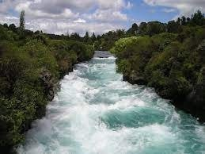
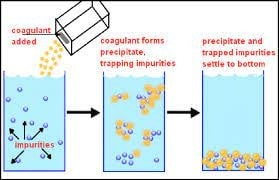

Water Process
- 
- Source water intake refers to the process of taking water from its natural source, such as a river, lake, or groundwater, for use in a water treatment plant or other industrial or agricultural process.
This is typically done through the use of intake structures that are designed to capture water from the source while minimizing the intake of debris and other unwanted materials.
The water is then transported to the treatment facility where it is processed to remove contaminants and impurities before being distributed to consumers or used for other purposes.
Source water intake is a critical component of the water supply chain and must be carefully managed to ensure the safety and quality of the water supply.
- 
- Sedimentation and flocculation are two important processes in water treatment that help to remove suspended solids, such as dirt, organic matter, and other impurities, from water.
Flocculation is the process of adding chemicals, known as flocculants, to water to help the suspended particles come together and form larger, heavier particles called flocs. These flocs are easier to remove from the water and settle more quickly during the sedimentation process.
Sedimentation, on the other hand, is the process of allowing the water to sit and allowing the flocs to settle to the bottom of a tank or basin. This can be accomplished through gravity or with the use of settling tanks or clarifiers. As the flocs settle, they form a layer of sludge at the bottom of the tank, which is then removed and disposed of properly.
The combination of flocculation and sedimentation helps to remove suspended solids and other impurities from water, making it safer and more suitable for a variety of uses, including drinking, industrial processes, and agricultural irrigation.
- Filtration is a process used in water treatment to remove impurities from water. It involves passing water through a porous material, such as sand, gravel, or activated carbon, which captures and removes suspended particles, organic matter, and other contaminants.
- Disinfection is the process of eliminating or reducing harmful microorganisms, such as bacteria, viruses, and parasites, from water to make it safe for consumption or use.
The disinfection process is a critical step in water treatment to prevent the spread of waterborne diseases and ensure public health.